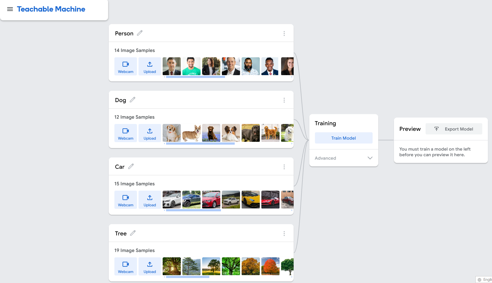

We first found photos of our subjects which were pictures of a person, a dog, a car, and a tree. We then imported these photos into the image model and trained the model to recognize these subjects.
After successfully training the model, the image model was able to correctly identify the subject that was presented to it. As can be seen below, the image model correctly identified the dog.